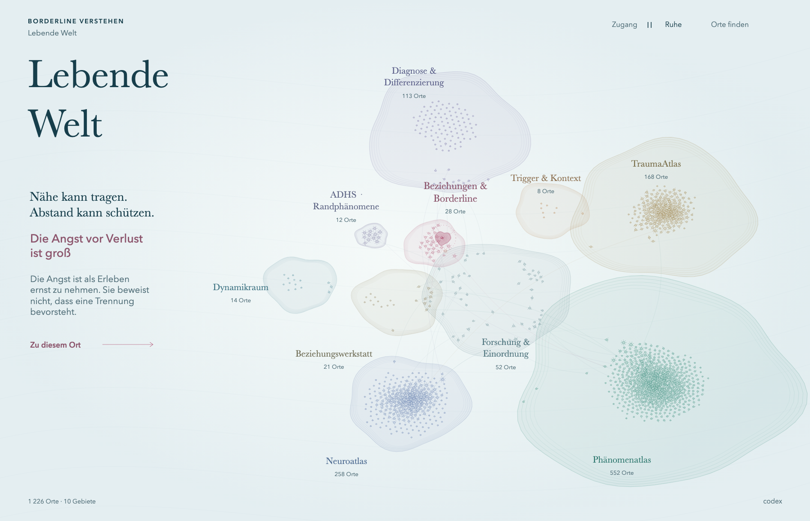
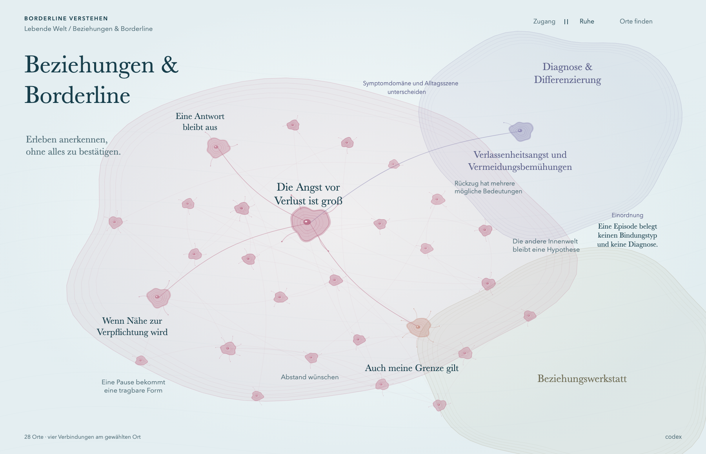
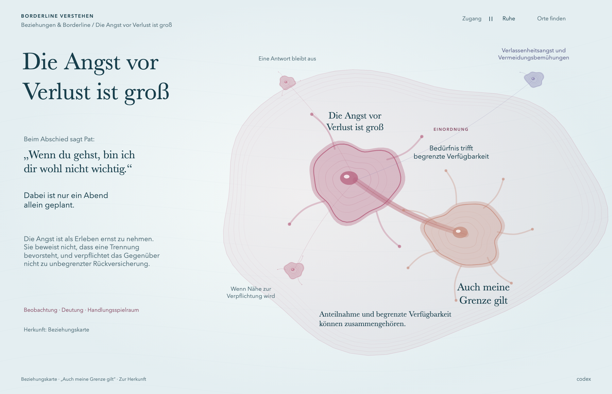
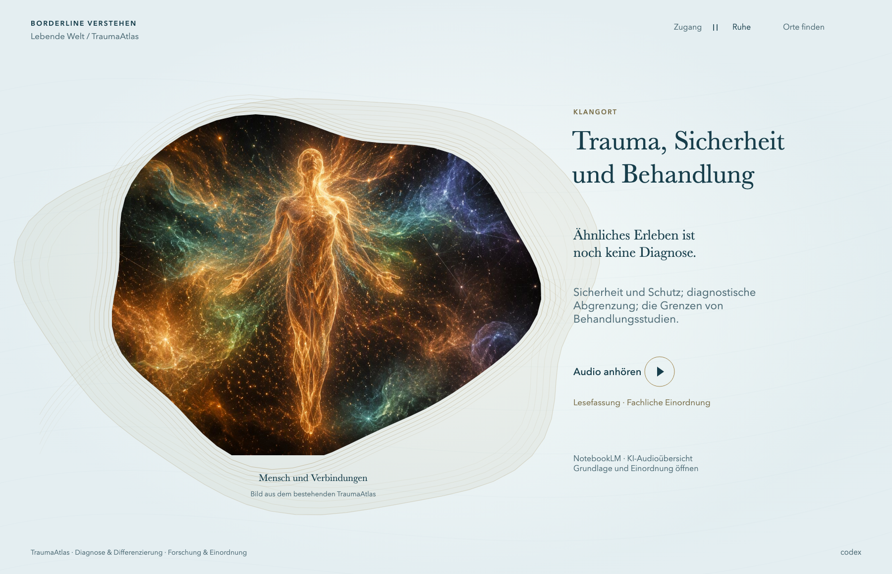
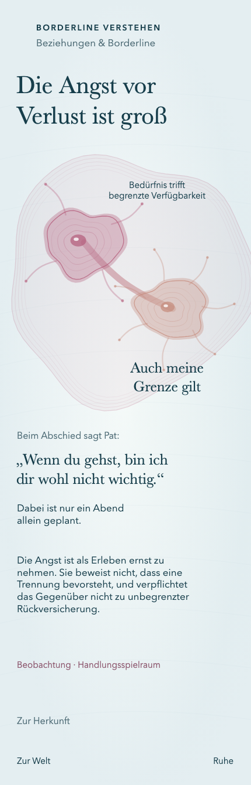
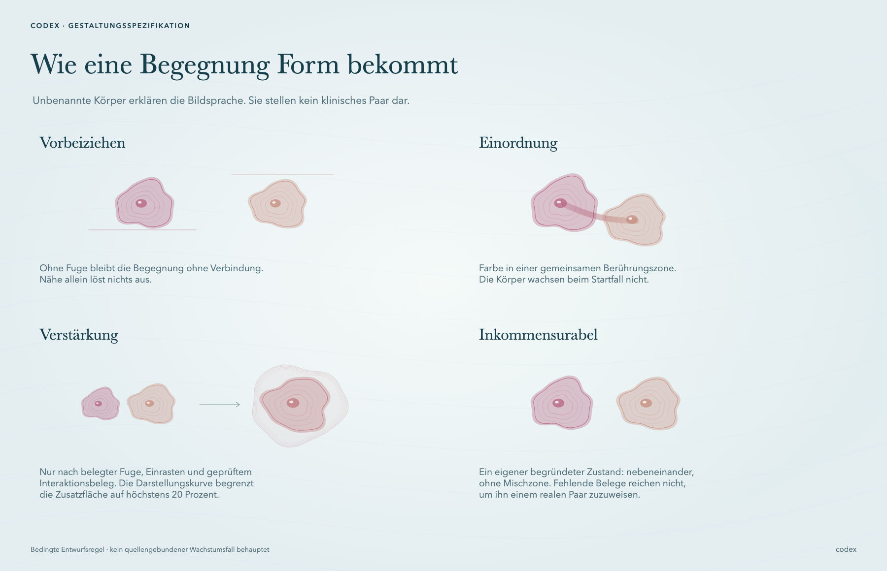

Codex · Die leuchtenden Ufer

Die ganze Welt
Alle 1.226 Orte. Der Einstieg führt in Beziehungen & Borderline.

Ein Gebiet mit Nachbarn
Vier tatsächliche Verbindungen am ausgewählten Ort. Die klinische Symptomdomäne bleibt von der Alltagsszene unterscheidbar.

Angst und Grenze
Die konkrete Fuge trägt eine redaktionelle Einordnung. Der Farbfaden wird in OKLab gemischt; die Körper werden dabei nicht vergrößert.

Ein Klangort
Ein echtes vorhandenes Bild und der gestaltete Zugang zur vorhandenen KI-Audioübersicht. Die Wiedergabe ist in diesem Entwurf noch nicht implementiert.

Auf schmalem Raum
Eigene Setzung bei 430 Pixel Breite, keine bloße Verkleinerung der Desktop-Leinwand.

Die Begegnungsgrammatik
Dieses Blatt erklärt die vorgeschlagene Bildsprache. Das Wachstum ist schematisch; es wird keinem klinischen Paar zugeschrieben.